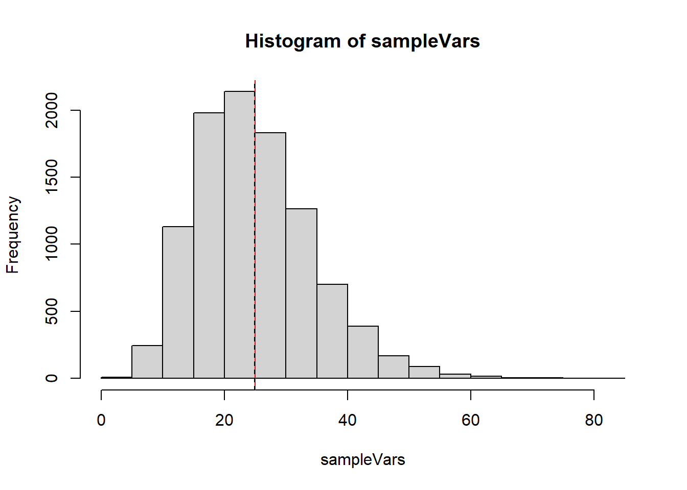
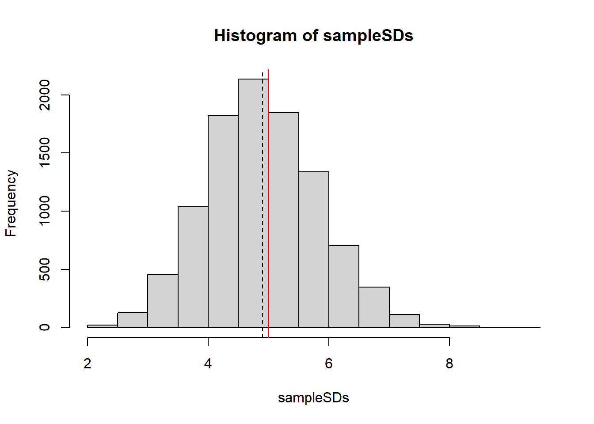
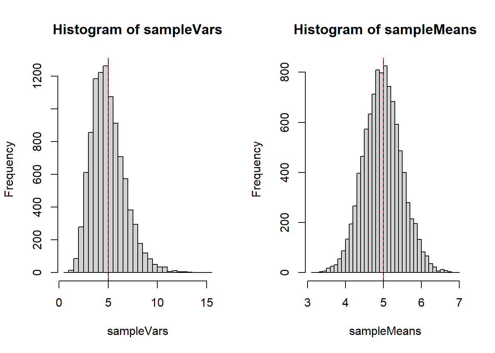
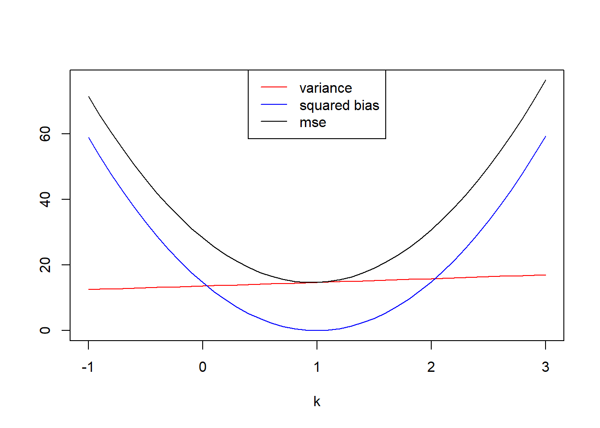

# Let sigma = 5
sampleVars <- replicate(10000, var(rnorm(15, 10, 5)))
hist(sampleVars)
abline(v=25, col="red")
abline(v=mean(sampleVars), lty=2)
Use the method of moments to construct an estimator for the parameter \(N\) when your data \(X_1, X_2, \ldots, X_n\) each are drawn independently from \(Binom(N, p)\). In this case assume that \(p\) is known to you. Note the sample size you’re working with is not the same as the \(N\) parameter from the binomial distribution.
Since \(EX=Np\), if \(p\) is known, and since \(\bar{X}\approx EX\) we can create an estimator for \(N\) by substituting \(\bar X\) for \(EX\) and replace the equals with approximation.
\[\bar{X} \approx N p\] so \[N \approx \frac{\bar X}{p}\]
Continuing from the previous problem, suppose that your data \(X_1, X_2, \ldots, X_n\) each are drawn independently from \(Binom(N, p)\) but both \(N\) and \(p\) are unknown. Use the method of moments to construct two simultaneous estimators \(\hat{N}\) and \(\hat{p}\). You can only use sample statistics in your estimator functions, you cannot use \(N\) or \(p\) because both of these parameters are unknown.
This will require us to use both the first and second moments. In place of the second moment \(EX^2\) we can use the variance, with the approximation that \(VarX \approx S^2\).
So we can make two approximations relating the sample mean and sample variance:
\[\bar X \approx EX = Np\] \[S^2 \approx VarX = Np(1-p)\] We can take a ratio to remove the \(N\): \[\frac{Var X}{\bar X} \approx \frac{Np(1-p)}{Np}=1-p\] Solve for \(p\) and we get \[\hat p = 1-\frac{Var X}{\bar X}\]
With this, we can find the estimator for \(N\)
\[\bar{X} \approx Np \Rightarrow N \approx \frac{\bar{X}}{p}\] we can substitute in \(\hat p\) \[\hat N = \frac{\bar{X}}{\hat p}=\frac{\bar X}{1-VarX/\bar{X}}=\frac{\bar{X}^2}{\bar X - Var X}\]
Suppose \(X_1, \ldots, X_n \sim Unif(0, M)\). Use the method of moments to construct an estimator \(\hat{M}\). ::: {.callout-note collapse=“true” title=“Solution”} Since \(EX=\frac{M+0}{2}\), We can say \(\bar{X}\approx \frac{M}{2}\) \[\hat M = 2\bar{X}\] :::
The gamma distribution takes two parameters, the shape parameter \(\alpha>0\) and the scale parameter \(\theta>0\). For \(X\sim Gamma(\alpha, \theta)\), we have two properties of the distribution: \(EX=\alpha\theta\) and \(VarX=\alpha\theta^2\). Suppose we have a random sample \(X_1, \ldots, X_n\) from such a gamma distribution.
Since \(\bar X \approx EX = \alpha\theta\), if \(\theta\) is known, then we can simply use \[\hat\alpha = \frac{\bar{X}}{\theta}\]
Now we must invoke the approximation \[S^2 \approx Var X = \alpha\theta^2\] If we square the expected value we get \[E^2X = \alpha^2\theta^2\] The ratio will be \(\alpha\): \[\frac{E^2X}{Var X}=\frac{\alpha^2\theta^2}{\alpha\theta^2}=\alpha\] Thus \[\hat\alpha = \frac{\bar{X}^2}{S^2}\]
Suppose we observe a sequence of independent trials where each trial is a success or a failure. Let \(X\) denote the number of failures before the first success. This experiment is repeated \(n\) times. Use the method of moments to construct an estimator for \(p\), the probability of success.
This describes a geometric random variable, as defined in STAT 340, and how it is defined in R. If \(X \sim Geometric(p)\), \(EX=\frac{1-p}{p}\)
Thus we could make an approximation
\[\bar X \approx \frac{1-p}{p}\]
\[ \begin{align} \bar X &\approx \frac{1-p}{p}\\ p\bar{X} &\approx 1-p \\ p\bar{X}+p &\approx 1\\ p(\bar{X}+1) &\approx 1\\ p &\approx \frac{1}{\bar{X}+1} \end{align} \] So this is our estimator \[\hat p = \frac{1}{\bar{X}+1}\]
Suppose we have a normally distributed population, and an independent sample of size \(15\) from this population. So our data \(X_1,\ldots,X_{15}\sim N(10, \sigma^2)\). For parts (a) and (b) you can set \(\sigma\) to be whatever value you want.
Let’s generate a bunch of samples and show all of the estimates for \(\sigma^2\) on a plot.
# Let sigma = 5
sampleVars <- replicate(10000, var(rnorm(15, 10, 5)))
hist(sampleVars)
abline(v=25, col="red")
abline(v=mean(sampleVars), lty=2)
Let’s generate a bunch of samples and show all of the sample standard deviations on a plot.
# Let sigma = 5
sampleSDs <- replicate(10000, sd(rnorm(15, 10, 5)))
hist(sampleSDs)
abline(v=5, col="red")
abline(v=mean(sampleSDs), lty=2)
Your random sample \(X_1, \ldots, X_20 \sim Poisson(\lambda)\). For parts (a) and (b) let’s assume the true value of \(\lambda\) is 5.
Let’s generate a bunch of samples and show all of the estimates for \(\sigma^2\) on a plot.
# Let sigma = 5
sampleVars <- replicate(10000, var(rpois(20, 5)))
sampleMeans <- replicate(10000, mean(rpois(20, 5)))
par(mfrow=c(1,2))
hist(sampleVars, breaks=40)
abline(v=5, col="red")
abline(v=mean(sampleVars), lty=2)
hist(sampleMeans, breaks=40)
abline(v=5, col="red")
abline(v=mean(sampleMeans), lty=2)
We already have samples so we can just calculat ehte sample variances
var(sampleVars)[1] 2.89728var(sampleMeans)[1] 0.2503446\(\bar{X}\) clearly has a much lower variance.
Suppose \(X_1, \ldots, X_n \sim Unif(0, M)\) (continuous). Consider two estimators for \(M\):
\[\hat{M}_1 = \max(X_1, \ldots, X_n)\] \[\hat{M}_2 = \frac{n+1}{n}\max(X_1, \ldots, X_n)\] Suppose that You have a sample size \(n=25\) and a true \(M=100\).
M1 <- 0; M2<-0
for(i in 1:100000){
x <- runif(25, 0, 100)
M1[i] <- max(x)
M2[i] <- 26/25*max(x)
}
mean(M1)-100[1] -3.831499mean(M2)-100[1] 0.01524156The first estimator seems to be negatively biased, but the second seems to be approximately unbiased.
var(M1)[1] 13.60056var(M2)[1] 14.71037M1 (which is biased) has a smaller variance M2 is unbiased and has a larger variance.
mean((M1-100)^2)[1] 28.28081mean((M2-100)^2)[1] 14.71045The second estimator, \(\hat M_2\) has a lower mean squared error.
We can just get 10000 sample maximums and construct these estimators easily. Since I’ve already got my M1 object, I can use that.
n <- 25
bias2 <- 0
variance <- 0
mse <- 0
k <- seq(-1,3, by=.1)
for(i in 1:length(k)){
bias2[i]=(mean((n+k[i])/n*M1)-100)^2
variance[i]=var((n+k[i])/n*M1)
mse[i] = mean(((n+k[i])/n*M1-100)^2)
}
plot(x=k, y=variance, col="red",type="l", ylim=c(0,max(c(bias2,variance,mse))), ylab="")
lines(x=k, y=bias2, col="blue")
lines(x=k, y=mse)
legend(x="top", legend=c("variance","squared bias","mse"), col=c("red","blue","black"), lty=1)
k[which.min(mse)][1] 1It seems the \(k\) value that minimizes the mean squared error is \(k=1\).
Another couple estimators for \(M\) from the previous problem are \(\hat{M}_3=2\bar{X}\), twice the sample mean and \(\hat{M}_4=2\tilde{X}\), twice the sample median.
Suppose that You have a sample size \(n=25\) and a true \(M=100\).
M3 <- 0; M4<-0
for(i in 1:100000){
x <- runif(25, 0, 100)
M3[i] <- 2*mean(x)
M4[i] <- 2*median(x)
}
#biases
mean(M3)-100[1] 0.006053955mean(M4)-100[1] -0.01288954#variances
var(M3)[1] 133.3608var(M4)[1] 372.4M3 has a slight negative bias, M4 seems to be more negatively biased. The variance of M4 is also higher than the variance of M3.
mean((M3-100)^2)[1] 133.3595mean((M4-100)^2)[1] 372.3964Both of these estimators have a far worse MSE than either of the first two.
Between all four estimators, M2 definitely has the smallest MSE and it is an unbiased estimator. It’s definitely the preferred estimator.
Consider the data below given by Wang (2000) on failure times of an electrical component. Assuming an exponential distribution \(Exp(\lambda)\), find the method of moments estimate of \(\lambda\)
t <- c(5, 11, 21, 31, 46, 75, 98, 122, 145, 165, 196, 224, 245, 293, 321, 330, 350, 420)For an exponential random variable \(X\), \(EX=\frac 1\lambda\). The method of moments suggests that \(\bar {X} \approx \frac1\lambda\), so \(\hat\lambda = \frac1{\bar{X}}\)
1/mean(t)[1] 0.0058102We’d estimate \(\hat\lambda=.0058102\).
Suppose \(X_1, \ldots, X_n \sim Unif(a, b)\), but both \(a\) and \(b\) are unknown.
As above, we can say that \(\bar{X} \approx \frac{a+b}{2}\) and \(S^2 \approx \frac{(b-a)^2}{12}\)
We can rearrange these and state \[2\bar{X} \approx a+b \quad\quad 12S^2 \approx b^2-2ab+a^2\] A substitution of \(b\approx 2\bar{X}-a\) can be made in the second equation. Using the quadratic formula (details are omitted) you get \(\hat a = \bar{X} \pm \sqrt{3}S\). The same solution is found for \(\hat b\) and it stands to reason then that the higher value is the estimator for \(b\) while the lower value is the estimator for \(a\).
\[\hat a = \bar{X}-\sqrt3 S, \hat b = \bar{X}+\sqrt 3 S\]
# Let's use a=0 and b=1, so b-a=1.
# We'll use n=25
n<-25
range.hat <- 0
for(i in 1:100000){
unifData <- runif(n)
range.hat <- (n+1)/n * diff(range(unifData))
}
mean(range.hat)-1 #bias[1] -0.1328613Repeating this a few times I find the estimated bias is between -0.015 and +.015 so I would venture to guess that the estimator is in deed unbiased.
Suppose \(X_1, \ldots X_n \sim Unif(-\theta, theta)\) are an independent random sample.
Use the method of moments to construct an estimator for \(\theta\) (hint: the first moment will be useless!)
Construct another estimator based on the sample max and sample min. Is it biased?
In 1997 Pepperidge Farm started putting faces on some of the goldfish crackers they produce. Roughly 40% of goldfish crackers have faces.
Suppose you want to estimate this proportion, and you buy a 20 pack box as a representative sample of Goldfish. The box contains 20 1-oz packs of goldfish, each containing roughly 50 goldfish. Suppose we can model the number of goldfish in a pack using a normal distribution (rounded to the nearest integer), \(Y_i \sim N(50, 2^2)\).
To estimate the proportion of smiley faces, you figure you could do three things:
Using a normal model for the number of fish in a bag, and a binomial for the number of smiley fish, determine the bias and variance of these three estimators.
NMC <- 10000
estimates <- data.frame(method1=numeric(NMC),
method2=numeric(NMC),
method3=numeric(NMC))
for(i in 1:NMC){
Y <- round(rnorm(20, 50, 2))
X <- rbinom(20, Y, .40)
estimates[i,] <- c(sum(X)/sum(Y),
mean(X/Y),
sum(X/Y * Y/sum(Y)))
}
colMeans(estimates) method1 method2 method3
0.3999461 0.3999519 0.3999461 apply(estimates, 2, FUN=var) method1 method2 method3
0.0002435102 0.0002438793 0.0002435102 When working out the math, it becomes clear that method 1 and 3 are actually identical to each other. Running the MC a few times it seems that all 3 methods give an unbiased estimate. Method 2 however has a slightly larger variance. This seems consistent after re-running the MC multiple times. Thus method 1 is probably the best method to estimate \(p\).
These problems are excellent practice but they are beyond the material we cover in STAT 340.